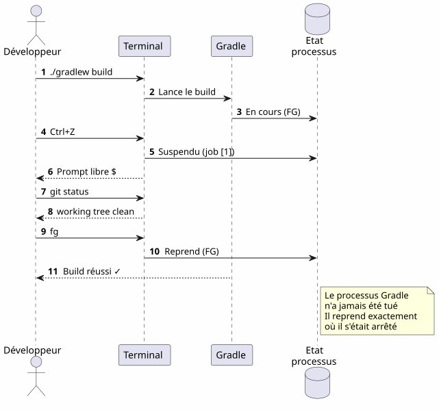
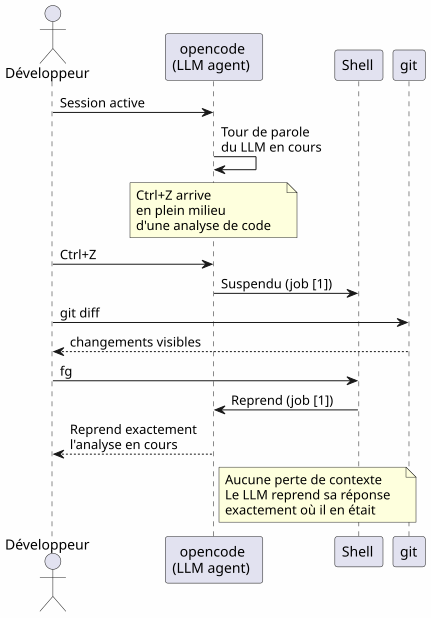
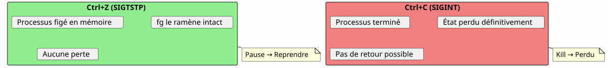
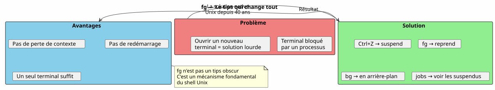
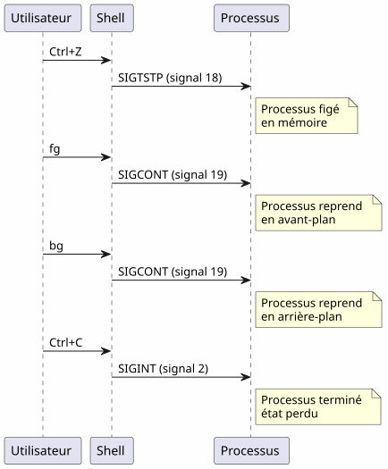

Le super tips de la commande fg : quand Ctrl+Z sauve votre session terminal
Publié le 21 April 2026
- 1. Le problème : un terminal occupé
- 2. Les trois commandes indispensables
- 3. Scénario 1 : Le long build
- 4. Scénario 2 : L’éditeur oublié
- 5. Scénario 3 : Le processus opencode suspendu
- 6. Scénario 4 : Gérer plusieurs jobs simultanément
- 7. Différences entre fg, bg, Ctrl+Z, Ctrl+C et &
- 8. Le cycle de vie complet d’un job
- 9. Tips avancés
- 10. Pièges et erreurs courantes
- 11. Diagramme récapitulatif
- 12. Pourquoi fg est sous-estimé
- 13. Mémoire technique : les signaux
- 14. Conclusion
- 15. Références
Vous lancez ./gradlew build, le terminal est bloqué pendant 3 minutes, et vous avez besoin de faire autre chose en attendant ? Pas besoin d’ouvrir un nouvel onglet. Ctrl+Z suspend le processus, fg le ramène exactement là où vous l’avez laissé. C’est le tips Unix le plus sous-estimé du quotidien d’un développeur.
1. Le problème : un terminal occupé
Tout développeur a connu cette situation :
$ ./gradlew build
> Building...Le terminal est bloqué. Vous ne pouvez plus taper aucune commande. Et vous avez besoin de consulter un fichier, lancer un git status, ou vérifier un port occupé.

La plupart des développeurs ouvrent un nouveau terminal. Mais il existe une solution plus élégante, plus rapide, et native : la gestion des jobs.
2. Les trois commandes indispensables
2.1. Ctrl+Z — Suspendre (SIGTSTP)
Ctrl+Z envoie le signal SIGTSTP au processus en avant-plan. Le processus est suspendu — pas tué — et le terminal retrouve son prompt.
$ ./gradlew build
> Building...
^Z
[1]+ Stoppé ./gradlew build
$Le nombre entre crochets [1] est le numéro de job. Le + indique le job par défaut.
2.2. fg — Reprendre en avant-plan
fg ramène le job suspendu au premier plan. Le processus reprend exactement là où il s’était arrêté.
$ fg
./gradlew build
> Building... (reprend où il en était)Avec un numéro de job spécifique :
$ fg %22.3. bg — Reprendre en arrière-plan
bg reprend le processus sans bloquer le terminal. Idéal pour les longs builds.
$ bg
[1]+ ./gradlew build &
$Le & à la fin signifie que le processus tourne en arrière-plan.
2.4. jobs — Lister les jobs du shell
$ jobs
[1]- Stoppé vim README.md
[2]+ En cours ./gradlew build
3. Scénario 1 : Le long build
C’est le cas d’usage le plus courant. Vous lancez un build Gradle, le terminal est bloqué, et vous avez besoin de faire autre chose.

3.1. Pas à pas
$ ./gradlew build
> Building...
^Z
[1]+ Stoppé ./gradlew build
$ git status
On branch main
nothing to commit, working tree clean
$ fg
./gradlew build
> Building...
BUILD SUCCESSFUL in 2m 34s4. Scénario 2 : L’éditeur oublié
Vous êtes dans vim, vous avez besoin de consulter un autre fichier sans quitter vim.
# Dans vim, en mode commande :
:shell
$ cat /path/to/other/file.txt
$ exit
# Retour dans vimMais c’est lourd. Avec Ctrl+Z, c’est immédiat :
# Dans vim, n'importe quel moment :
Ctrl+Z
[1]+ Stoppé vim README.md
$ cat /path/to/other/file.txt
# ... lire le fichier ...
$ fg
vim README.md
# Retour exact là où on en était, curseur en place
vim restaure parfaitement son état après un fg : position du curseur, contenu du buffer, historique d’annulation — tout est préservé.
|
5. Scénario 3 : Le processus opencode suspendu
C’est le scénario qui a motivé cet article. Vous utilisez opencode (outil CLI pour piloter un LLM sur votre code), et le processus est suspendu.

$ opencode
# ... session en cours, LLM analyse le code ...
^Z
[1]+ Stoppé opencode
$ git diff HEAD~1
# vérifier les changements récents
$ fg
opencode
# Le LLM reprend là où il s'était arrêtéL’avantage est double :
-
Pas de perte de contexte : la session LLM, l’historique de conversation, les fichiers ouverts — tout est préservé
-
Pas de redémarrage : pas besoin de relancer opencode, de recharger le contexte, de réexpliquer le problème au LLM
6. Scénario 4 : Gérer plusieurs jobs simultanément
fg et bg acceptent un numéro de job pour cibler un processus spécifique quand plusieurs sont suspendus.
$ vim config.yml
^Z
[1]+ Stoppé vim config.yml
$ ./gradlew test
^Z
[2]+ Stoppé ./gradlew test
$ htop
^Z
[3]+ Stoppé htop
$ jobs
[1] Stoppé vim config.yml
[2]- Stoppé ./gradlew test
[3]+ Stoppé htop
$ fg %2
./gradlew test
# Le build reprend en avant-plan
$ bg %3
[3] htop &
# htop reprend en arrière-plan
6.1. Récapitulatif des commandes de jobs
| Commande | Effet | Exemple |
|---|---|---|
|
Suspend le processus en avant-plan |
Envoi de |
|
Reprend le job par défaut en avant-plan |
|
|
Reprend le job n en avant-plan |
|
|
Reprend le job par défaut en arrière-plan |
|
|
Reprend le job n en arrière-plan |
|
|
Liste les jobs du shell courant |
|
|
Termine le job n |
|
7. Différences entre fg, bg, Ctrl+Z, Ctrl+C et &
Beaucoup de développeurs confondent ces mécanismes. Voici une clarification décisive.

| Raccourci/Commande | Signal | Effet | Revenir en arrière ? |
|---|---|---|---|
|
|
Suspend le processus (figé, en mémoire) |
Oui : |
|
|
Tue le processus (terminé) |
Non : processus détruit |
|
|
Tue le processus + core dump |
Non : processus détruit |
|
— |
Lance en arrière-plan directement |
|
Ctrl+Z est non-destructif. Le processus est figé tel quel, en mémoire. Vous pouvez reprendre immédiatement avec fg. C’est un pause, pas un stop.
|
8. Le cycle de vie complet d’un job

9. Tips avancés
9.1. fg avec le job le plus récent et l’alternance
fg sans argument ramène le job marqué + (le plus récent). Mais vous pouvez aussi utiliser %- pour cibler le job précédent :
$ vim file1.txt
^Z
[1]+ Stoppé vim file1.txt
$ vim file2.txt
^Z
[2]+ Stoppé vim file2.txt
$ fg # ramène job [2] (le plus récent)
$ fg %- # ramène job [1] (le précédent)9.2. tuer un job proprement
$ jobs
[1]- Stoppé vim config.yml
[2]+ Stoppé ./gradlew test
$ kill %2 # envoie SIGTERM au job 2
$ kill -9 %1 # envoie SIGKILL au job 1 (force)9.3. désown : détacher du shell
disown retire un job de la table des jobs du shell. Le processus continue de tourner mais ne peut plus être ramené avec fg :
$ ./gradlew build &
[1] 12345
$ disown %1
# Le processus continue mais n'est plus lié au shell
# Ça survives à la fermeture du terminal9.4. Combiner avec nohup pour les longs processus
Pour qu’un processus survive à la fermeture du terminal :
$ nohup ./gradlew build &
[1] 12345
$ disown %1
# Le build continue même si vous fermez le terminal
10. Pièges et erreurs courantes
10.1. Confondre Ctrl+Z et Ctrl+C
C’est l’erreur la plus fréquente. Ctrl+C tue le processus. Ctrl+Z le suspend. Si vous appuyez sur Ctrl+C par réflexe, tout l’état est perdu — fichiers ouverts, sessions LLM, builds en cours.

10.2. Les jobs sont locaux au shell
jobs, fg et bg ne fonctionnent que dans le shell qui a lancé les processus. Si vous ouvrez un nouveau terminal, vous ne verrez pas les jobs de l’autre.
# Terminal 1
$ vim file.txt
^Z
[1]+ Stoppé vim file.txt
# Terminal 2 (nouveau)
$ jobs
# (rien — les jobs sont locaux au shell)Pour voir les processus system-wide, utilisez ps ou htop :
ps aux | grep vim10.3. Les jobs ne survivent pas à la fermeture du shell
Si vous fermez le terminal, tous les jobs suspendus ou en arrière-plan sont détruits. Pour qu’un processus survive, utilisez nohup + disown :
$ nohup ./gradlew build &
[1] 12345
$ disown %1
# Fermer le terminal → le build continue10.4. Les processus interactifs et fg
Certains programmes interactifs ne se portent pas bien après un Ctrl+Z + fg. C’est rare mais ça arrive :
-
Certains programmes qui utilisent des signaux (vim, htop, less gèrent bien
Ctrl+Z) -
Les programmes réseau longs (ssh, opencode) récupèrent généralement correctement
-
Les programmes qui modifient le terminal (ncurses) peuvent parfois laisser le terminal dans un état inattendu
En cas de terminal corrompu après un fg, tapez :
reset11. Diagramme récapitulatif

12. Pourquoi fg est sous-estimé
La plupart des développeurs modernes découvrent fg tard, voire jamais. Quelques raisons :
-
Les IDE cachent le terminal : VS Code propose un terminal intégré, mais les onglets multiples rendent
fgmoins nécessaire en apparence -
Les outils graphiques remplacent les CLI : les gestionnaires de fichiers, les moniteurs système, les clients Git graphiques
-
tmux et screen : ces multiplexeurs résolvent le même problème différemment, mais
fgest plus simple et toujours disponible
Pourtant, fg est :
-
Universel : présent dans tous les shells POSIX (bash, zsh, fish…)
-
Sans dépendance : pas besoin d’installer tmux ou screen
-
Instantané : deux frappes (
Ctrl+Zpuisfg) pour suspendre et reprendre -
Préservateur de contexte : l’état du processus est intact

13. Mémoire technique : les signaux
Pour les curieux, voici les signaux impliqués :
| Signal | Nom | Envoyé par | Effet |
|---|---|---|---|
2 |
|
|
Interruption — termine le processus |
3 |
|
|
Quitte avec core dump |
18 |
|
|
Stop interactif — suspend le processus |
19 |
|
|
Continue — reprend un processus suspendu |
15 |
|
|
Terminaison propre |
9 |
|
|
Terminaison forcée (impossible à intercepter) |
Le flux complet :

14. Conclusion
fg n’est pas un tips obscur — c’est un mécanisme fondamental du shell Unix, disponible depuis les années 70. Le fait que la plupart des développeurs l’ignorent est un symptôme de notre époque : les IDE et les multiplexeurs nous ont éloignés des bases.
Mais quand vous êtes sur un serveur SSH, dans un terminal minimal, ou simplement en train d’utiliser opencode et que le LLM est en plein travail — Ctrl+Z, fg, bg, jobs sont vos meilleurs amis.
Ctrl+Z suspend, fg reprend. C’est la pause-play du terminal.
15. Références
-
man bash— section JOB CONTROL -
man signal— liste des signaux POSIX